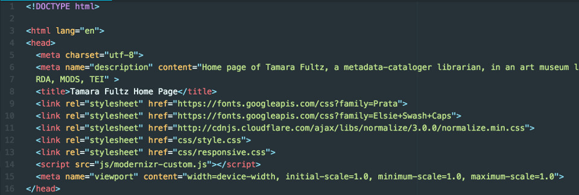

Building A Responsive Website
Posted by Tamara Fultz on .
For my final project in the Flatiron School’s Building Responsive Websites with HTML & CSS, I decided to build a personal portfolio website - admittedly not a singularly exciting idea, but useful in terms of my own career development. It was to have six pages: a home or “about” page, a blog page, a resume page, a page for metadata / linked data resources, a photo gallery (not yet operational), and finally a media page which is basically being used to exhibit a number of multimedia and random assignments from the class.
The structure is fairly simple: at top in the header is a navigation bar and below it a “logo” bar with my name, the layout for the body consists of two columns with the one on the left taking up 2/3s of the space and the other column on the right taking up 1/3 of the space, social icons are located in a fixed position on the right, and at bottom of the page is a footer with copyright information.
I confess that when it came to the initial planning I really only worked from an outline and throughout the semester I used a To-Do list to mark off my progress on the pages and special features that I intended on adding. If had been creating a more complex site I certainly would have used wireframing tools like Balsamiq or Mockingbird.
So let’s discuss my site: the easiest way is probably to walk you through the HTML code on my index page, briefly talk of the other pages, and then walk you through the two CSS pages. I will end with a succinct paragraph on what I liked and disliked about the course and the coding.

The image above shows the head element used on all the pages: clearly HTML5 compliant. The first two link elements are to the Google Font fonts that I used. The next link is to a minimized file of normalize CSS that you can get at the cdnjs site: this small CSS file helps browsers render elements more consistently and in line with current standards. The following link is to my regular CSS style sheet and the link after that to my CSS stylesheet with the media queries. The script element gives access to a customized Modernizr file: Modernizr helps you to build and download a Javascript file that will detect HTML5 and CSS3 features in browsers, which allows the JavaScript to avoid using unimplemented features or has it employ a workaround to use them. Finally, the meta viewport element: the width=device-width part sets the screen width to that of the device and the initial-scale=1.0 sets the initial zoom level when the page is first loaded by the browser. The minimum-scale=1.0, maximum-scale=1.0 prevents the devices from zooming in or out and instead rely on the media query styling to change the layout .
The next section of code on my index page is the body with the social icons code positioned at the top: I will be talking more about them when I get to my CSS page, but the links all go to 4 of my social media pages. The next section is a header element with my “logo” and navigation bar. I don’t have much to say about the HTML code in these, but that initially I had my navbar set up as an unordered list, but when it came to styling it I had some problems, so instead set it so they could display inline-block. This was much easier and was well-explained in the code along exercise. Each pages has various section elements for the page’s content. Finally, every page has a footer element with a copyright statement at the bottom.
My style.css page has all the general style code for the pages. I must confess that I felt a bit overwhelmed by this stylesheet: as we went along in the exercises I kept adding and taking away from it and I got a bit confused. I recognize that this is one area where good planning in the beginning would have made it easier. The first section has all my global styles: I wonder if some of them are necessary, but I wanted to be overly cautious in not ignoring some elements. I honestly wish I could tell you while every line is there, but I have long since forgotten… this is why commenting is so important. Lesson learned!
The blog section has the style for my snazzyquote class (class, not an id, because I intend to have a quotation in every book review post). I thought it was important to elegantly style these quotes so they were patently set out from the text and they certainly break up the monotony of the text!
The resume section has style for the resume-part class: these are standard resume parts that I wanted to keep very formal. Then I saw some really cool skill bars on some people’s resumes and I Googled to get the style for that. Hence the skills class: I think the background colors add some liveliness to the page, although one can seriously question how well anyone can assess the percentage of their own skill in a subject area.
Next comes the background section: these are the background colors and gradients with fixes for the older browsers that are used in the header navbar and logo divs. Then the navigation bar section: this was all cut and paste from the assignment, but it basically fixes the navbar at the top, aligns text in center, gives some borders, displays the links inline-block, and assigns style for some CSS pseudo-classes like a:hover and a: selected. The next two sections are for the table and the comment form: not much to say about these.
An important section is that of the fixes: it includes a global fix for the box-sizing property: it resets the box-sizing property to border-box. This prevents padding and margins from adding to the size of an element. Also included in this section are the styles for the clearfix: the clearfix forces an element to self-clear its children and is used in float layouts. To show how effective this fix is I was having problems getting things to float, then I noticed I had miss-typed “clearfix”. In addition, I was trying to float columns that weren’t in the same wrapper (this was pointed out by a friend and a Flatiron fellow student). Once I corrected both those errors the columns floated like a charm!
The next CSS section sets up the style for my two column layout. There is a small section to style the sections. Then one of my favorite CSS tricks is used in the section for the social icons: here I used some sprite rollovers. Is it too geeky to say how much I love these things? A sprite image is a collection of smaller images put into a single large image. Here, the smaller images are icons for the various social media sites with a regular and hover variation for each one. The CSS background-position can then be used to reposition the image to show the correct state within the element. I was elated when I got these to work on my page!
The final sections were for my logo, footer, and media queries. In addition, I added a separate page for my media queries which created the responsive design for the site. I wanted to go over each of my pages, but this post is getting ridiculously long. So let’s sum it up:
Here are the most important things I learned:
- a single typo in your code can horribly mess up an entire page or even an entire site… type carefully, cut & paste carefully ,and use validators when you can’t find the error.
- comment your code as much as possible, so you understand why you did things the way you did much later.
- use more planning up front and not plan as you go.
- using responsive design isn’t nearly as hard as it sounds: using the development tools in the browser help show where it the breakpoints are on your pages (although note I still have a problem with the comment form on the Media page and need guidance in correcting it).
- understanding how to use the command line is imperative.
What did I enjoy the most?
- a navigation bar that works can be a thing of beauty.
- sprite rollovers are da’ bomb!
- creating websites yourself gives you a sense of control over your own content and ensures that every action is considered.
- learning how to use Git and GitHub was oddly gratifying and made me feel part of a larger web development community. (See my post on GitHub on my Wordpress blog!)